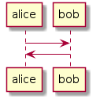
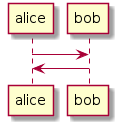

Asciidoctor plantuml
By using one kind of diagram with asciidoctor-plantuml.js
playbook.yml
asciidoc:
extensions:
- asciidoctor-plantuml
attributes:
plantuml-server-url: 'http://www.plantuml.com/plantuml' |

|
By using one kind of diagram with asciidoctor-plantuml.js
asciidoc:
extensions:
- asciidoctor-plantuml
attributes:
plantuml-server-url: 'http://www.plantuml.com/plantuml' |

|